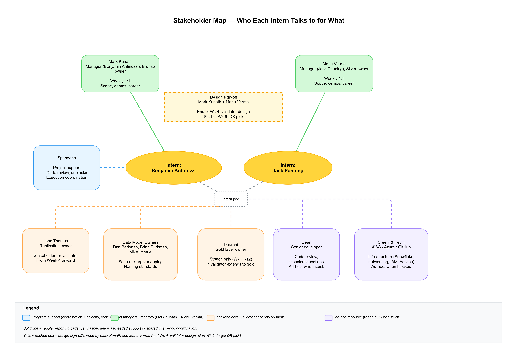

Data movement from Azure Snowflake to AWS Snowflake is handled by Snowflake replication, owned by John Thomas. The replicated data lands in a new AWS database with its own structure and naming standards, so source and target are not 1:1. The intern's job is not to move data; it's to give the team confidence the replicated data matches its source under that mapping, and to make the migration's status legible. They will build a Jira-backed migration dashboard, package the existing Confluence push script as a reusable GitHub Action, build a mapping-driven parity validator, and use that validator to sign off on the replication of one database under UDPO-7851 / UDPO-7866.
The migration is the team's largest in-flight initiative. Today, cutover readiness is tracked by hand on Confluence pages (Progress Tracker, Open Architecture Questions, weekly WSRs) and parity is verified ad hoc. Both gaps are real, intern-sized, and produce tools the team keeps using after the internship ends.
The project also gives the intern a working knowledge of Snowflake, the EDW data model, and the Jira workflow by week 6, which is the prerequisite for being useful on any UDPO ticket. By week 10 they should be able to read a LAB or OBSERVATION bug ticket and understand what's actually broken.
A web page that auto-refreshes from Jira and renders the current state of the migration. Replaces or augments the hand-maintained Progress Tracker page.
Definition of done: dashboard refreshes on a schedule via GitHub Actions, the push step runs through the reusable action, the team uses the dashboard instead of the hand-maintained tracker for at least one standup, and the intern has documented both the workflow and the action in the team runbook.
A Python tool that confirms data in the new AWS database matches its Azure source under the team's source-to-target mapping. The mapping is a config file (YAML or JSON) maintained by the data model owners (Dan Barkman, Brian Burkman, Mike Immrie) and consumed by the validator. The intern does not author the mapping; they consume it.
The validator targets the silver layer first (Manu's domain). If time allows in weeks 11–12, it can be extended to the gold layer (Dharani's domain) as a stretch. Silver is the right starting point because parity matters most where downstream consumers read; gold is derived, so silver-layer parity bugs will propagate upward and need to be caught at silver anyway.
The validator handles three mapping shapes:
For each mapped pair, the validator checks:
updated_at or equivalent watermark on each side).Before any code, the intern meets with John Thomas to understand how the replication is configured, how the target database structure is being decided, what guarantees the replication makes, and what failure modes John already monitors. The validator should complement John's monitoring, not duplicate it.
Definition of done: the validator runs against at least three replicated tables covering at least two of the three mapping shapes, John and Manu have reviewed the report format, and the validator is wired into the cutover sign-off checklist for replicated databases.
Paired with Spandana and coordinating with John Thomas, the intern uses the validator from Part 2 to sign off replication parity on one database, observes the cutover, and writes a retro.
Definition of done: validator reports attached to one database's cutover ticket, retro published on Confluence.
| Area | Tools |
|---|---|
| Language | Python 3 |
| Warehouse | Snowflake (Azure and AWS), Snowflake Python connector |
| Source of truth | Jira REST API, Confluence storage format |
| Hosting / scheduling | GitHub Actions |
| Output | HTML, pushed via the team's existing Confluence push script |

| Week | Milestone | Mentor checkpoint |
|---|---|---|
| 1 | Onboarding, access (Jira, Snowflake dev, Confluence, GitHub). Read the Progress Tracker, Open Architecture Questions, and the V2 epic UDPO-7292. | End-of-week 1:1, confirm access |
| 2 | Jira API spike. Pull all UDPO issues under the migration epics into a local script. Sketch the dashboard data model. | Review the data model with mentor |
| 3 | Dashboard v1 rendering locally. Reviewed by mentor. | Demo to mentor |
| 4 | Dashboard scheduled and pushed to Confluence. Documented in runbook. Meet with John Thomas to learn the replication setup. Meet with Dan, Brian, and Mike to learn the mapping and naming standards. Validator design sign-off by Mark and Manu before week 5 work starts. | Demo dashboard to team in standup. Spandana joins the John and data-model meetings. |
| 5 | Consume the source-to-target mapping. Validator spike on a silver-layer 1:1 mapped pair with renames, checking row count and schema mapping coverage. | Review approach with Spandana and John. Confirm mapping is available and stable enough to build against. |
| 6 | Validator v1 on silver: 1:1 case complete — coverage, type compatibility, row count, null rate, distinct count, replication lag check. Tested against one 1:1 mapped silver table. | Code review with Spandana. Reach out to Dean if anything is structurally unclear. |
| 7 | Add sampled hash check. Extend to handle 1:N (split) and N:1 (merge) mapping shapes. Run against three replicated silver tables covering at least two shapes. | Review reports with Manu and John |
| 8 | Validator wired into the cutover sign-off checklist. Documented, including how to add a new mapping to the config. | Demo to team |
| 9 | Target DB pick signed off by Mark and Manu, coordinating with John. Plan the sign-off. | Pick reviewed before any prod access |
| 10 | Pre-cutover: run the validator against the target database, work through any discrepancies with John. | Pre-cutover sign-off review |
| 11 | Attend cutover. Re-run validator post-cutover. Close the ticket. | Cutover observed |
| 12 | Retro, internship write-up, knowledge transfer to whoever inherits the dashboard and validator. | Final demo to broader team |
| Risk | Mitigation |
|---|---|
| Access delays (Snowflake, Jira API, Confluence write, push-script repo) eat week 1. | Spandana files access tickets the week before start and confirms all access on day 1. |
| Security training competes with project time, especially in weeks 1–2. | Plan for it. Week 1 milestones are deliberately light (onboarding + reading) to absorb training load. |
| The source-to-target mapping isn't ready by week 5. | Hard dependency. Spandana checks in on mapping status in weeks 3 and 4. If it slips, the intern works on the dashboard's polish, the GitHub Action, or the documentation runbook instead of starting on the validator blind. Don't let them build against a guess. |
| Mapping is unstable through weeks 5–8 (definitions keep changing). | Expected, and the validator design absorbs this: mapping is a config file, not code. The intern works against whatever version is current and refreshes the report when the config changes. They do not chase mapping changes inside the validator's own logic. |
| A target structure shows up that doesn't fit 1:1, 1:N, or N:1 (e.g. M:N joins, derived/calculated columns). | The validator flags these as "out of validator scope" in the report rather than silently failing. The intern documents what's not covered. Closing those gaps becomes a v2 ticket, not an intern problem. |
| The validator overlaps with monitoring John already has, and feels like an audit. | The week-4 meeting with John is for alignment, not announcement. Intern shows up to learn what John already checks and designs the validator to fill the gap, not duplicate the work. |
| Intern picks a database for Part 3 that has hidden complexity (open architecture question, unusual upstream). | Spandana, Manu, and John pick the candidate together in week 9. Anything tied to an open architecture question on the tracker is off-limits. |
| Validator surfaces real production discrepancies on replicated tables. | Good — that's the point. Escalate to John and the database owner, log as a separate ticket. Don't let it derail the intern timeline. |
| Part 3 sign-off slips past week 12 because the replication cutover slips. | Acceptable. Parts 1 and 2 are independently valuable; the internship is a success at the end of week 8. |

The intern takes Veradigm's security learning sessions in parallel with the project work. This is not optional or scheduled around the project — block time for it on the calendar from week 1.